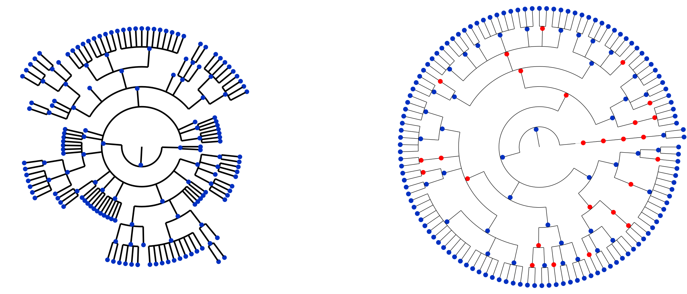
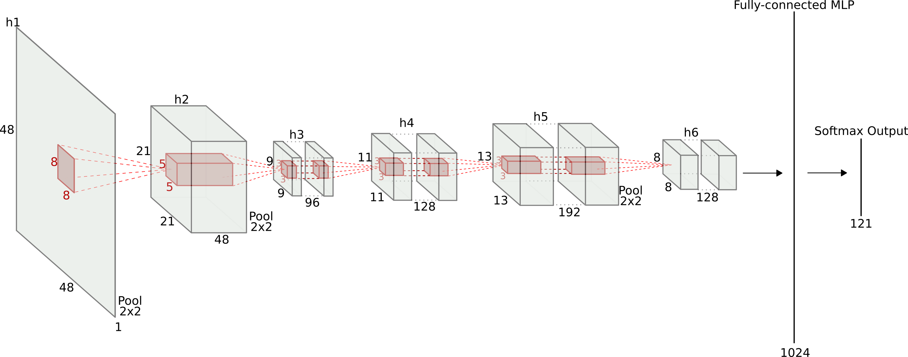

N is size of test set (20,000), M is number of class labels (121), \(y_{ij}\) is 1 if observation \(i\) is in class \(j\) and 0 otherwise. \(p_{ij}\) is our predicted probability that \(i\) belongs to \(j\)
Sensitive to overconfidence
Differentiable
Not the same as accuracy
30:70 public:private test data split
Why?
Monitoring oceanic conditions is vital
Democratisation of results
Potentially helpful for other similar challenges
Other reasons
Practice
Cutting edge
Fun
Instant feedback
...$100,000 1st Place Prize
Input Data
30,336 labelled
20,000 unlabelled
121 classes
84-95% self-consistency in labelling [Culverhouse, 2003] (Dinoflagellates)
Scale invariant
Variable input sizeUnbalanced classesUnbalanced classesClasses very similarHierarchy of labels
Making the most of this data
Get more data!
Rescaling
Constant size
Makes life a lot easier
Makes training more stable
Lose detail (siamese network)
Lose sizing information (scale invariance)
Hierarchial modelling
Label schema
Left: Original Hiearchy, Right: New Layers
Supplied to six parallel softmax output layers
Improved initial learning rate
Logloss performance was unchanged
Our Model
Classical Computer Vision
ConvolutionConvolution kernels
CV Performance
Better with global rather than localfeatures
Hiearchial label data made no difference
Worse than even simplest convnet
So what are Convnets?
Artificial Neural NetworkDeep Neural NetworkConvolutional Deep Neural Network
Our architectureActivation